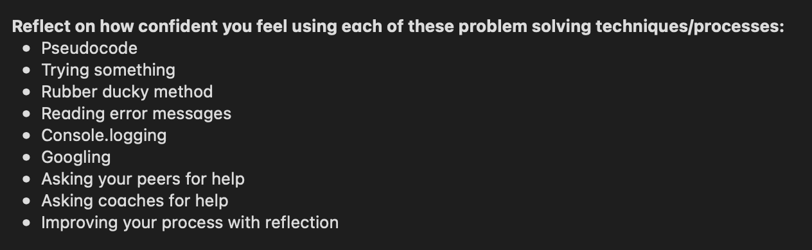

A Time When I got Blocked by a Simple Problem
When I was working on the first built-in methods challenge, I needed to research about join arrays into a string.
During this research I had read that the when I used .join it would return as a string.
For some reason I thought okay this means if I just input arr.join(' ') it will return the string automatically.
Oh, was I wrong... So I spent a little more time googling and looking through the worked exampled to figure out what I did wrong.
They had something in common that I didn't have.
They all had return arr.join(' ') , it was at this point I realised, I need to read my code and think, does this make sense?
I felt pretty stupid after that, but it's alright, I will never forget it now.
I learned that sometimes, instead of diving straight in and constantly changing code I slowly go through my code and makes sense.
Because there will be times where something small will just break your code.
That Time I Solved a Problem Elegantly
During a different portion of the built-in methods challenge.
We needed to write some code to remove the words 'buzz' from an incoming string and return a string.
The way I overcame this problem was by using console.log() extensively.
After each method I used on the string, I console logged it to see what I got and in what format.
This allowed me to know which methods to use on the current string/array to get the correct answer.
I felt pretty good throughout this process because it felt like I was putting my learning to work.
I learned that I need to take things one small step at a time rather than try to solve the problem all in one go.
How Confident I Am Using Problem Solving Processes

Out of these problem solving processes, I am somewhat confident with trying something, reading error messages, console.logging, and asking peers and coaches for help.
Though I do find that I still try to solve the problem for a long time before I ask for assistance.
There are times when I am googling solutions and I find that some solutions are a bit complicated or I don't know how to apply the examples correctly.
I am trying to use pseudocode more and more often, but I find the pseudocode I write doesn't help that much.
But I will continue to write it so that I can be become at it.
I don't find myself using the rubber ducky method too often, but I still use it at times.
Though I am not confident with using it as I find it doesn't help as much as the other methods mentioned.
Finally, I have been reflecting a lot on how I carry out the challenges but I have not been improving my process as much as I should be.
This is a work in progress and I will try to improve my process as I go along.